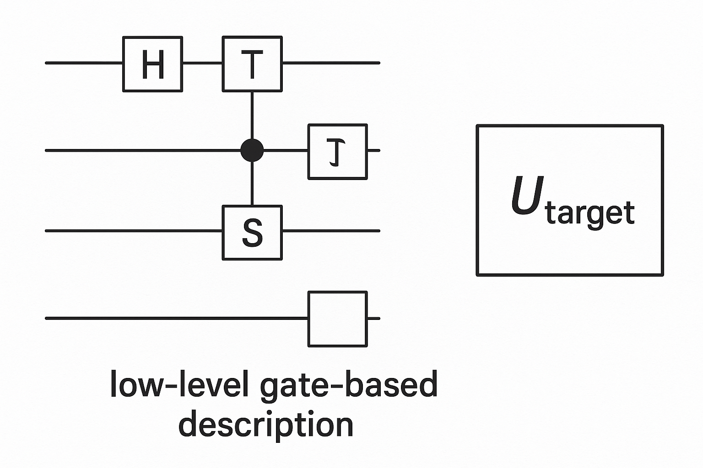
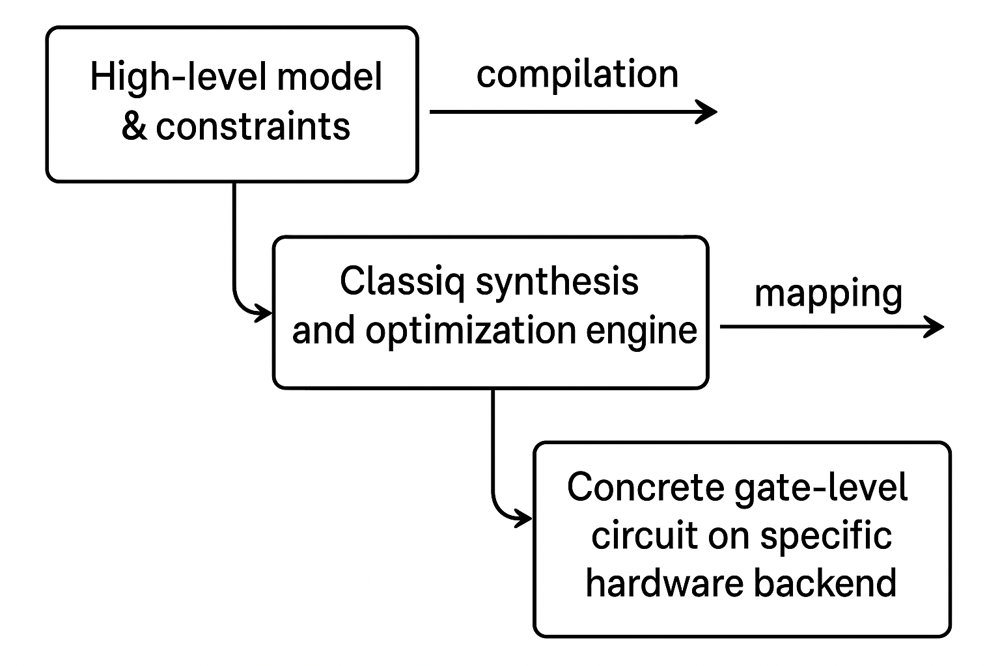
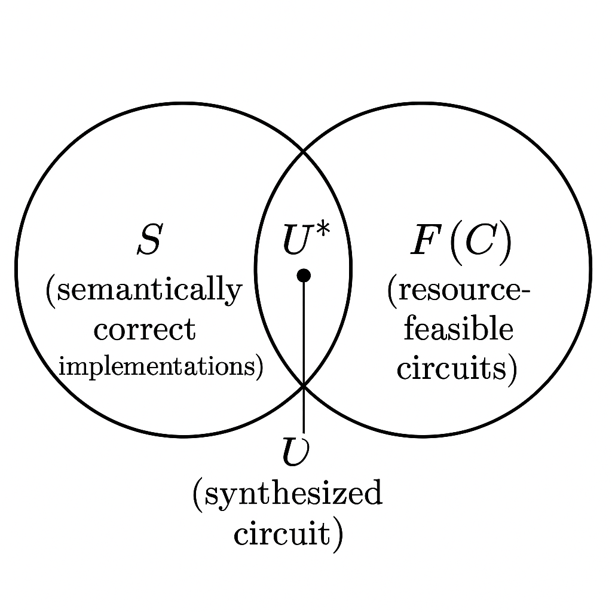
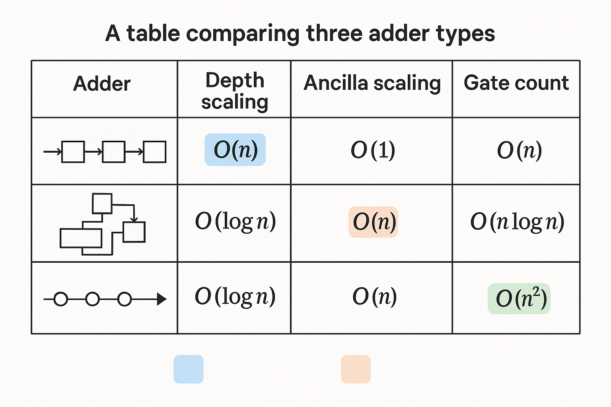
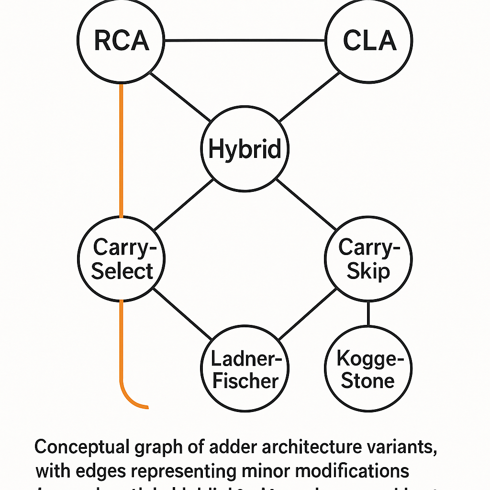
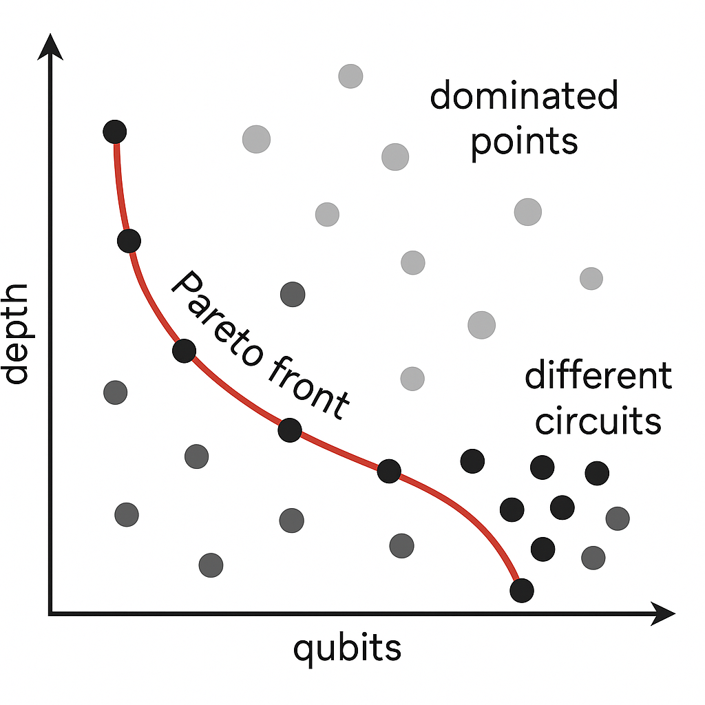
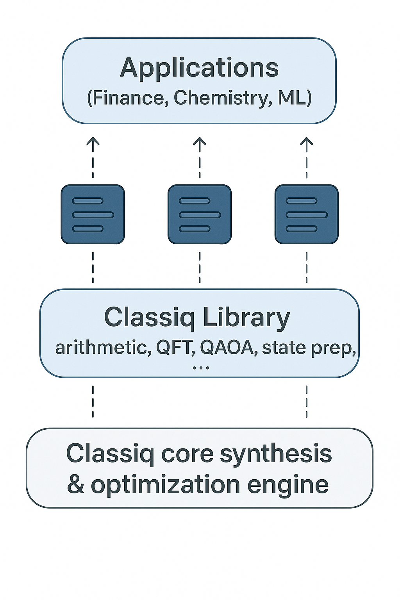
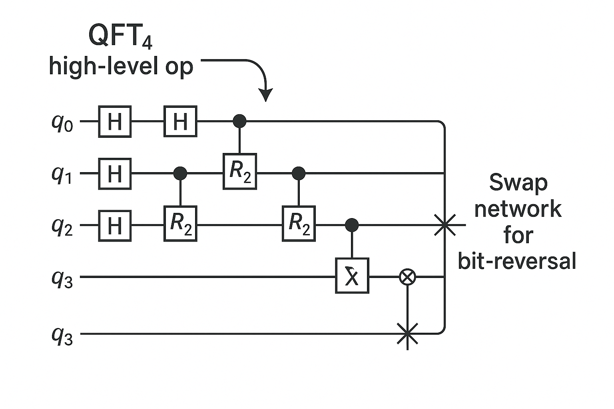
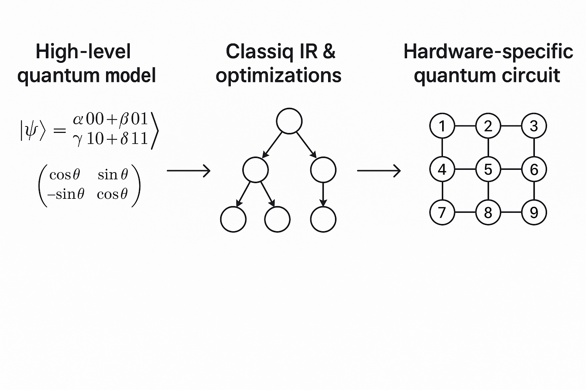

第 1 講：Classiq 量子計算平台主題 1 —— 從電路層到高階量子模型的跨層思維
本講作為「深入講解 Classiq 量子計算平台」的第一講，重點不在「如何安裝與執行」，而在於建立一套 從傳統電路描述到高階量子模型（Model-based Quantum Design） 的嚴謹數學與工程觀念，並說明 Classiq 在此脈絡中的定位與優勢。
本講的目標讀者是已具備以下背景的博士生與研究者：
- 熟悉量子計算的基本數學：Hilbert 空間、單／多量子比特門、量子電路模型。
- 了解常見量子演算法（如 Grover, QPE, VQE），但希望進一步從「設計自動化」與「高階抽象」角度看待量子軟體工程。
- 對 NISQ 裝置下的資源最佳化（深度、寬度、T-count、error mitigation）有實務或理論興趣。
本講將圍繞以下幾個核心主題展開：
- 從傳統電路模型到高階量子模型的數學框架。
- Classiq 的模型描述哲學：以「限制條件」與「邏輯結構」取代「逐門設計」。
- 量子設計空間（Design Space）的形式化定義與優化問題。
- 以一個簡化的「受限優化問題」為例，對比手工設計與 Classiq 式自動合成的差異。
1. 量子電路與高階描述：數學觀點與工程觀點
1.1 傳統量子電路模型的形式化
在標準量子電路模型中，一個 \(n\) 量子比特電路可以形式化為一個作用在 Hilbert 空間
\(\mathcal{H} \cong (\mathbb{C}^2)^{\otimes n}\) 上的單位ary算符
\[
U \in \mathrm{U}(2^n).
\]
通常我們將 \(U\) 分解為一串基本門的乘積：
\[
U = U_L U_{L-1} \cdots U_2 U_1,
\]
其中每個 \(U_k\) 通常是作用在 1 或 2 個量子比特的基本門（例如 \(X, H, S, T, \mathrm{CNOT}\) 等），且滿足
\(\mathcal{G}\)。-->\[
U_k \in \mathcal{G},
\]
其中 \(\mathcal{G}\) 是預先選定的「基礎閘集合」（gate set）。在實務中，\(\mathcal{G}\) 要符合特定硬體平台的原生門集合以及誤差模型。
若以「設計空間」的角度，我們會說：
- 設計目標（spec）是一個理想單位ary \(U_{\text{target}}\)。
- 設計變數是門序列 \(\{U_k\}_{k=1}^L\)。
- 我們尋找一個近似
\[
U_L \cdots U_1 \approx U_{\text{target}},
\]
並同時最小化深度、門數、T-count、error 率等。
這種思維非常「低階（low-level）」：一切以門為基本對象。

圖 1-2: A diagram showing a sequence of quantum gates on a few qubits (H, CNOT, T, etc.) forming a circuit, with a label "low-level gate-based description". To the side, a single box labeled U_target as a black-box unitary representing the abstract specification.
Prompt: A diagram showing a sequence of quantum gates on a few qubits (H, CNOT, T, etc.) forming a circuit, with a label "low-level gate-based description". To the side, a single box labeled U_target as a black-box unitary representing the abstract specification.
1.2 從單位ary到「計算結構」的抽象
然而，多數量子演算法的描述並不直接給出 \(U_{\text{target}}\) 的矩陣形式，而是以更高階的語義結構呈現，例如：
- 「對所有 \(x \in \{0,1\}^n\) 同時執行一個 oracle \(f(x)\)」—— 這是函數計算的抽象，而非具體矩陣。
- 「對一段哈密頓量 \(H\) 進行時間演化」—— 這是物理模型層的描述：
\[
U_{\text{evo}}(t) = e^{-iHt}.
\]
- 「最小化某個期望值 \(\langle \psi(\vec{\theta}) | H | \psi(\vec{\theta}) \rangle\)」—— 這是變分優化層的描述。
若沿用傳統電路的形式，我們會嘗試「手動」將這種高階結構轉換為門序列，但這會導致：
- 高度人工化的 heuristics；
- 難以同時考慮多種資源限制（量子比特數目、拓撲限制、錯誤率等）；
- 無法系統地探索「所有合理的設計空間」。
要解決這個問題，我們需要對「高階描述」進行形式化。直觀上，可以將一個量子演算法視為一個 帶有語義標記的有向無環圖（DAG）：
- 節點（nodes）對應於高階操作（例如「對資料暫存器施加 QFT」、「實作 oracle \(O_f\)」、「進行疊代測相」等）。
- 邊（edges）對應於量子暫存器或經典暫存器的資料流動關係。
形式化地，可將高階量子程式視為一個
\[
\mathcal{P} = (\mathcal{V}, \mathcal{E}, \mathcal{L}),
\]
其中：
- \(\mathcal{V}\)：節點集合。
- \(\mathcal{E} \subseteq \mathcal{V} \times \mathcal{V}\)：有向邊集合（DAG 結構）。
- \(\mathcal{L} : \mathcal{V} \to \Sigma\)：節點標記函數，將每個節點標記為某種高階量子操作類別（語義符號集合 \(\Sigma\)）。
這樣的結構在原理上可以被編譯（compile）為具體的門序列。然而，在一般性平台中，這種編譯需要一個龐大的「pattern-based rewriting」與優化機制。
1.3 Classiq 的觀點：從「程式」到「量子設計問題」
Classiq 的核心思想是：將量子電路設計視為一個 高階約束優化問題。用數學語言描述：
- 設計對象： 不再只是單一單位ary \(U\)，而是一整個族
\[
\{U(\theta)\}_{\theta \in \Theta}
\]
所構成的 參數化電路家族（ansatz family 或電路模板），以及其內部邏輯結構。
- 約束條件： 同時包括
- 語義約束（Semantic Constraints）：例如「此區塊實作一個受控加法器」、「此區塊完成 QPE 的相位讀出」。
- 物理與資源約束（Physical & Resource Constraints）：例如
- 可用量子比特數目 \(n_{\max}\)。
- device 拓撲 \(\mathcal{G}_{\text{hw}}\) 的鄰接關係。
- allowed gate set \(\mathcal{G}_{\text{hw}}\) 與拼接成本（例如 T-gate penalization）。
- 目標函數（Objective）： 例如：
- 最小化電路深度 \(D(U)\)。
- 最小化門數 \(G(U)\) 或 T-count \(T(U)\)。
- 最小化硬體 error model 下的 logical error 機率。
- 組合目標：
\[
\min_U \ \alpha D(U) + \beta G(U) + \gamma T(U),
\]
其中 \(\alpha, \beta, \gamma\) 為權重。
因此，在 Classiq 的哲學中，「寫一個量子程式」其實等價於「定義一個優化問題」，該問題的解是一個滿足所有約束且資源近似最優的量子電路。

"Classiq synthesis and optimization engine" -> "Concrete gate-level circuit on specific hardware backend". Arrows indicate compilation and mapping.">
圖 1-6: A high-level flowchart with three boxes: "High-level model & constraints" -> "Classiq synthesis and optimization engine" -> "Concrete gate-level circuit on specific hardware backend". Arrows indicate compilation and mapping.
Prompt: A high-level flowchart with three boxes: "High-level model & constraints" -> "Classiq synthesis and optimization engine" -> "Concrete gate-level circuit on specific hardware backend". Arrows indicate compilation and mapping.
2. Classiq 的核心概念：高階模型與約束驅動的電路合成
2.1 Classiq 平台的抽象層級
根據 Classiq 官方定位（可參考 classiq-library 與官方文件），平台主要特色如下：
- 以「高階量子模型（Model）」描述程式，而非直接給出門列表。
- 使用一套
Model / Problem / Constraints / Synthesis 的 API 結構（不同版本 API 會演進，但核心精神一致）。
- 可對接多種後端（IBM, IonQ, AWS Braket…），自動處理拓撲映射與 gate set 適配。
- 內建多種常見子結構（modules），例如加法器、乘法器、整數比較、QFT、QAOA blocks、amplitude encoding 等。
重要的是：Classiq 不只是「提供一些現成 template 電路」，而是將這些高階結構整合進一個可進行形式優化的合成器。
2.2 以受限優化的語言形式化 Classiq 的設計問題
讓我們以更嚴謹的方式定義「Classiq 式的量子設計問題」。
假設我們有一個高階量子規格書（specification）\(\mathcal{S}\)。形式上，可以將其視為：
- 一組輸入暫存器 \(\{R_i\}\)，對應到 Hilbert 空間 \(\mathcal{H}_i\)。
- 一組輸出暫存器 \(\{R'_j\}\)，對應到 Hilbert 空間 \(\mathcal{H}'_j\)。
- 一組高階操作符號 \(\{\mathsf{Op}_k\}\)，每一個對應一個「可實作的子電路 family」（例如加法、比較、QFT…）。
直接地，\(\mathcal{S}\) 定義了一個「等價關係類」：
\[
[\mathcal{S}] = \{U \mid U \text{ 的語義行為符合 } \mathcal{S}\},
\]
其中「語義行為」可以被形式化為系統在 input-output 關係上滿足某些映射條件。例如對於一個可逆函數 \(f : \{0,1\}^n \to \{0,1\}^n\)，其對應的 oracle
\[
U_f : |x, y\rangle \mapsto |x, y \oplus f(x)\rangle
\]
若僅限定在 \(|y\rangle = |0^n\rangle\) 子空間中的行為，則可用行為等價來定義一個等價類。
再加入資源約束集合 \(\mathcal{C}\)，例如：
- 量子比特上限：\(n \leq n_{\max}\)。
- 最大深度：約束 \(D(U) \leq D_{\max}\)。
- 最大 T-gate 數量：約束 \(T(U) \leq T_{\max}\)。
- 允許的硬體拓撲：\(U\) 可被分解為一系列只作用於硬體鄰接圖 \(\mathcal{G}_{\text{hw}}\) 上鄰接 qubit 的二體門。
則 Classiq 的 synthesis 問題可被視為：
\[
\text{find } U^\star \in [\mathcal{S}] \cap \mathcal{F}(\mathcal{C})
\]
使得某個代價函數 \(J(U)\) 最小化：
\[
U^\star = \arg\min_{U \in [\mathcal{S}] \cap \mathcal{F}(\mathcal{C})} J(U),
\]
其中
\[
\mathcal{F}(\mathcal{C}) = \{U \mid U \text{ 使用資源滿足 } \mathcal{C}\}.
\]
實務上，\([\mathcal{S}] \cap \mathcal{F}(\mathcal{C})\) 是一個極高維、離散的設計空間。Classiq 平台的工作，即是以啟發式（heuristics）、符號推導（symbolic methods）與經過剪枝的探索來搜尋其中的「良好解」。

圖 1-7: A conceptual Venn diagram showing one circle labeled "[S] (semantically correct implementations)" and another circle labeled "F(C) (resource-feasible circuits)". Their intersection contains a point labeled "U* (synthesized circuit)".
Prompt: A conceptual Venn diagram showing one circle labeled "[S] (semantically correct implementations)" and another circle labeled "F(C) (resource-feasible circuits)". Their intersection contains a point labeled "U* (synthesized circuit)".
2.3 從程式碼角度看 Classiq 模型（直觀示例）
雖然本講不著重實作，但為了建立直覺，我們用 pseudo-code（風格類似 Python + Classiq SDK）示意：
from classiq import Model, QuantumVariable, Constraints, synthesize
# 1. 建立模型
model = Model()
# 2. 定義量子變數（暫存器）
x = QuantumVariable(bits=4, name="x")
y = QuantumVariable(bits=4, name="y")
# 3. 指定高階運算：例如 y := y + x (模 2^4)
model.add_operation("add", inputs=[x, y], outputs=[y])
# 4. 指定資源約束
constraints = Constraints(
max_qubits=10,
max_depth=200,
target_hardware="IBM_Q"
)
# 5. 合成
circuit = synthesize(model, constraints)
# 6. circuit 內部為 gate-level 網表，可輸出到 Qiskit / QASM 等
與傳統 Qiskit 程式相比，這裡的關鍵差異在於：
- 你並未指定任何具體的 ADD 電路實作（ripple-carry, carry-lookahead, Fourier-based...）。
- 你只給出「我要實作加法」的語義，並搭配資源約束。
- Classiq 將根據約束自動選擇適合的結構與實作細節。
接下來我們會用更數學化的方式形式化「模加法」這樣的高階操作，並展示如何將其視為設計空間中的「模組」。
3. 範例：模加法（modular addition）從高階規格到 Classiq 式設計
3.1 模加法的數學定義與可逆性
考慮 \(n\)-bit 整數加法（mod \(2^n\)）：
\[
\forall x, y \in \{0,1\}^n,\quad \tilde{y} = y + x \pmod{2^n}.
\]
若我們希望實作一個可逆運算
\[
U_{\text{add}} : |x, y\rangle \mapsto |x, y + x \pmod{2^n}\rangle,
\]
對於 \(|x, y\rangle\) 的 computational basis 狀態，上述 mapping 直接定義了 \(U_{\text{add}}\) 的作用；因為對每個 \(x\)，映射
\[
y \mapsto y + x \pmod{2^n}
\]
是雙射（bijection），因此整體 mapping 為可逆，且
\[
U_{\text{add}}^\dagger = U_{\text{add}}^{-1} = U_{-x}, \quad \text{即} \quad |x, y\rangle \mapsto |x, y - x \pmod{2^n}\rangle.
\]
一般而言，任何 可逆的經典函數
\[
f: \{0,1\}^m \to \{0,1\}^m
\]
都可以提升為一個量子單位ary
\[
U_f : |x\rangle \mapsto |f(x)\rangle.
\]
非可逆情形（例如 \(f: \{0,1\}^m \to \{0,1\}^k\) 且 \(k < m\)）可以透過擴展暫存器與輔助位（ancilla）來實作：
\[
U_f : |x, 0^k\rangle \mapsto |x, f(x)\rangle,
\]
其行為在 \(|0^k\rangle\) 子空間內可定義為可逆。
在 Classiq 模型中，「模加法」會被視為一個高階運算符號 \(\mathsf{ADD}_n\)，其語義為：
\[
\mathsf{ADD}_n : (x, y) \mapsto (x, y+x \pmod{2^n}).
\]
但實際上，存在多種 不同的實作結構 可以實現此語義。
3.2 不同的加法電路結構與資源分析
常見的量子加法器包含：
- Ripple-Carry Adder (RCA)
- Carry-Lookahead Adder (CLA)
- Fourier-based Adder (QFT Adder)
這些架構在量子資源上的特性非常不同：
- RCA：深度 \(O(n)\)，輔助 qubit 數量較少（甚至為 0 或 \(O(1)\)），門數 \(O(n)\)。
- CLA：深度 \(O(\log n)\)，但需要額外 \(O(n)\) 的 ancilla，門數增加。
- QFT-based：深度 \(O(n)\) 或 \(O(\log n)\) 視實作而定，但需要高精度旋轉門（非 Clifford+T 基底下的代價不同）。
若我們使用簡化模型來近似資源消耗，例如：
- \(D_{\text{RCA}}(n) \approx \alpha n\)
- \(A_{\text{RCA}}(n) \approx a_0\)
- \(D_{\text{CLA}}(n) \approx \beta \log n\)
- \(A_{\text{CLA}}(n) \approx a_1 n\)
其中 \(D\) 表示深度，\(A\) 表示 ancilla 數量，\(\alpha, \beta, a_0, a_1\) 為常數。在 NISQ 情境中，我們可能有約束：
\[
A(n) \leq A_{\max}, \qquad D(n) \leq D_{\max}.
\]
則對一個指定的 \(n\)，不同加法器的可行性與優劣會由上述不等式決定。例如當硬體量子比特數量極度有限（\(A_{\max}\) 很小）時，RCA 也許是唯一可行選項；當系統允許大量 ancilla，且深度是主要瓶頸時，CLA 可能更佳。

圖 1-8: A small table comparing three adder types (RCA, CLA, QFT-based) with columns for depth scaling, ancilla scaling, and gate count, visually highlighting trade-offs.
Prompt: A small table comparing three adder types (RCA, CLA, QFT-based) with columns for depth scaling, ancilla scaling, and gate count, visually highlighting trade-offs.
3.3 手工設計 vs. Classiq 自動化：設計空間觀點
以手工設計來說，研究者通常會：
- 根據經驗與文獻選擇一種加法器架構（例如 RCA）。
- 按照既有 template 實作門序列。
- 必要時手動估計資源並調整架構。
若要同時考量多種資源限制（例如 受限 qubit 數量 + 硬體拓撲 + 特定門集），手工搜尋所有可能變體（例如不同的 ripple 順序、partial carry-lookahead、時間—空間折衷設計）幾乎是不可能的。
Classiq 的做法則是把上述「選擇架構＋調整細節」問題，轉換成一個 組合優化問題。形式化地，我們可以認為：
- 存在一個設計空間 \(\mathcal{D}_n\)，其中每一個元素 \(d \in \mathcal{D}_n\) 對應一個特定的加法電路結構（含 ancilla 安排、門排程、路由策略等）。
- Classiq 的高階符號 \(\mathsf{ADD}_n\) 對應到一個 mapping
\[
\Phi_{\mathsf{ADD}_n} : \mathcal{D}_n \to [\mathsf{ADD}_n],
\]
將結構描述 \(d\) 映射到具體單位ary \(U_d\)。
我們在第 2 節中的設計問題，可在此情境下寫為：
\[
\text{find } d^\star \in \mathcal{D}_n \text{ s.t. } U_{d^\star} \in [\mathsf{ADD}_n] \cap \mathcal{F}(\mathcal{C}),\ \ J(U_{d^\star}) \text{ 最小}.
\]
這其實是一個極度複雜的 離散優化問題，理論上可視作某種 0-1 整數規劃（integer programming）或廣義約束滿足問題（CSP），但直接求精確最優解在實務上往往不可行。因此，Classiq 會使用：
- 預先分析過的「架構族」與其資源 scaling。
- 符號層級的重寫規則（rewrite rules）。
- 啟發式剪枝與優化演算法。
從使用者角度來看，這一切被隱藏在 synthesize(model, constraints) 的背後。

圖 1-4: A conceptual graph where each node is a different adder architecture variant (RCA, CLA, hybrid designs), with edges representing minor modifications. A search path is highlighted to a chosen architecture that meets resource constraints.
Prompt: A conceptual graph where each node is a different adder architecture variant (RCA, CLA, hybrid designs), with edges representing minor modifications. A search path is highlighted to a chosen architecture that meets resource constraints.
4. 設計空間與優化問題的形式化分析
4.1 量子設計空間的抽象：從類比到形式定義
在經典電路設計中（ASIC / FPGA），我們會談到：
- 邏輯綜合（logic synthesis）：從 Boolean function 到 gate-level netlist。
- 技術對映（technology mapping）：將邏輯閘對映到特定標準單元庫（standard cell library）。
- 佈局繞線（place & route）：實體設計階段。
量子電路設計也有類似多層架構，但因為單位ary與量子疊加的特性，許多問題變得更加複雜。Classiq 的一大貢獻，是將高階量子演算法的描述與下層量子電路綜合／映射流程整合成可自動處理的 pipeline。
我們嘗試對「設計空間」做一個抽象定義：
令 \(\mathcal{L}\) 為一個高階量子語言，其語法產生的所有合法程式集合為 \(\mathcal{P}_{\mathcal{L}}\)。每個程式 \(P \in \mathcal{P}_{\mathcal{L}}\) 對應某個語義映射
\[
\llbracket P \rrbracket : \mathcal{H}_{\text{in}} \to \mathcal{H}_{\text{out}},
\]
其本質仍是一個單位ary（或 CPTP 映射，視是否包含噪聲與測量）。語義等價關係 \(\cong\) 定義為：
\[
P_1 \cong P_2 \iff \forall |\psi\rangle,\ \llbracket P_1 \rrbracket |\psi\rangle = \llbracket P_2 \rrbracket |\psi\rangle.
\]
若我們給定一個「規格程式」\(P_{\text{spec}}\)，其對應的等價類為
\[
[P_{\text{spec}}] = \{P \in \mathcal{P}_{\mathcal{L}} \mid P \cong P_{\text{spec}}\}.
\]
另一方面，將 gate-level 電路集合記為 \(\mathcal{C}_{\mathcal{G}}\)（由 gate set \(\mathcal{G}\) 所生成）。存在一個語義映射
\[
\mathsf{Sem} : \mathcal{C}_{\mathcal{G}} \to \text{Unitary}(\mathcal{H}),
\]
使每個電路 \(C\) 對應單位ary \(U_C\)。我們可以將設計空間定義為
\[
\mathcal{D}(P_{\text{spec}}) := \{ C \in \mathcal{C}_{\mathcal{G}} \mid U_C \in [\llbracket P_{\text{spec}} \rrbracket] \},
\]
即「所有與規格程式語義等價的電路集合」。
Classiq 的高階模型，其實扮演了 \(P_{\text{spec}}\) 的角色，而 \(\mathcal{D}\) 則是一個潛在巨大的離散集合。實務中，我們只能探索其中一小部分 \(\hat{\mathcal{D}}\subset \mathcal{D}\)：
\[
\hat{\mathcal{D}} := \text{design subspace explored by the synthesizer}.
\]
優化問題則可以正式寫為：
\[
\min_{C \in \hat{\mathcal{D}} \cap \mathcal{F}(\mathcal{C})} J(C),
\]
其中 \(J(C)\) 衡量資源消耗。
4.2 成本函數與多目標優化（multi-objective optimization）
由於實際上存在多個關鍵資源（\#qubits, depth, T-count, error-rate, classical runtime, measurement count…），Classiq 需要處理某種形式的多目標優化。我們可以形式化為：
令
\[
\vec{R}(C) = (R_1(C), R_2(C), \dots, R_k(C))
\]
為 \(k\) 個不同資源量度（例如 \(R_1 =\) depth, \(R_2 =\) \#qubits, \(R_3 =\) T-count 等）。則一個常見做法是引入權重向量 \(\vec{\lambda} \in \mathbb{R}^k_{\ge 0}\)，定義標量化成本函數：
\[
J(C) := \sum_{j=1}^k \lambda_j R_j(C).
\]
然而，從理論觀點，這只是一種「將多目標轉為單目標」的方法；另一種更結構化的方法是考察 Pareto 最優性（Pareto optimality）。定義：
對於兩個電路 \(C_1, C_2\)，若
\(j\) 括號 \(C\) 一，小於等於 \(R\) 下標 \(j\) 括號 \(C\) 二，對所有的 \(j\) 都成立，且存在一個 \(j\) 零，使得 \(R\) 下標 \(j\) 零 括號 \(C\) 一 嚴格小於 \(R\) 下標 \(j\) 零 括號 \(C\) 二。-->\[
R_j(C_1) \le R_j(C_2),\ \forall j,\quad \text{且}\ \exists j_0\ \text{使得}\ R_{j_0}(C_1) < R_{j_0}(C_2),
\]
則稱 \(C_1\) 支配 \(C_2\)（\(C_1 \prec C_2\)）。而一個電路 \(C^\star\) 是 Pareto 最優的，若不存在 \(C\) 使得 \(C \prec C^\star\)。
理想情況下，Classiq 合成器探索的 \(\hat{\mathcal{D}}\) 若能覆蓋一部分 Pareto 前緣（Pareto front），使用者便能直接根據偏好從中選擇方案。然而，實務中這會大幅增加計算負擔，因此平台通常會需要使用者給定明確的優先順序或權重，便於搜尋集中在某一個「加權最優」附近。

圖 1-1: A 2D plot with axes "depth" and "qubits". Several points represent different circuits; a curve along the lower-left boundary is highlighted as the Pareto front. Some dominated points are greyed out.
Prompt: A 2D plot with axes "depth" and "qubits". Several points represent different circuits; a curve along the lower-left boundary is highlighted as the Pareto front. Some dominated points are greyed out.
4.3 簡化數學示例：兩種加法器的選擇
為了具體展示此優化結構，我們考慮極度簡化的情形——只考慮兩種加法器：RCA 與 CLA，且只有兩個資源指標：深度 \(D\) 與 ancilla 數量 \(A\)。令
\[
\begin{aligned}
D_{\text{RCA}}(n) &= \alpha n, \\
A_{\text{RCA}}(n) &= a_0, \\
D_{\text{CLA}}(n) &= \beta \log n, \\
A_{\text{CLA}}(n) &= a_1 n.
\end{aligned}
\]
假設：
- \(\alpha, \beta, a_0, a_1 > 0\)，
- 硬體限制為 \(A \le A_{\max}\)，
- 我們以加權成本函數
\[
J(D,A) = \lambda_D D + \lambda_A A
\]
作為目標。
則我們的設計候選只有兩個：
- \(C_{\text{RCA}}: (D, A) = (\alpha n, a_0)\)
- \(C_{\text{CLA}}: (D, A) = (\beta \log n, a_1 n)\)
先檢查可行性：
- RCA 可行條件：
\[
a_0 \le A_{\max}.
\]
- CLA 可行條件：
\[
a_1 n \le A_{\max} \quad \Rightarrow \quad n \le \frac{A_{\max}}{a_1}.
\]
若 \(n > \frac{A_{\max}}{a_1}\)，則 CLA 完全不可行，只有 RCA 可用。此時選擇唯一可行解 \(C_{\text{RCA}}\)。
若兩者皆可行，則比較成本：
\[
\begin{aligned}
J_{\text{RCA}} &= \lambda_D \alpha n + \lambda_A a_0, \\
J_{\text{CLA}} &= \lambda_D \beta \log n + \lambda_A a_1 n.
\end{aligned}
\]
令
\[
\Delta J := J_{\text{RCA}} - J_{\text{CLA}} = \lambda_D (\alpha n - \beta \log n) + \lambda_A (a_0 - a_1 n).
\]
我們可以分析在不同參數下的行為。例如當 \(\lambda_A\) 很大（表示 ancilla 極為昂貴）時，\(\lambda_A(a_0 - a_1 n)\) 的負向影響會更顯著，導致 RCA（ancilla 幾乎不隨 \(n\) 成長）更有利。反之，若 \(\lambda_D\) 很大（深度極為關鍵），則
\[
\lambda_D (\alpha n - \beta \log n)
\]
將主導決策，對足夠大的 \(n\) 而言，\(\alpha n \gg \beta \log n\)，CLA 深度優勢明顯。
這個極簡示例展示了：
- 設計決策如何被可行域 \(\mathcal{F}(\mathcal{C})\) 限制（\(A_{\max}\)）。
- 成本函數 \(J\) 的權重如何形塑「最佳」結構選擇。
- Classiq 合成器在概念上，正是在大量這種「結構 vs. 資源」取捨中自動搜尋。
5. 高階模組與 Classiq Library：從數學語義到可重用構件
5.1 Classiq Library 的角色
Classiq Library 是一個開放的範例與模組集合，展示如何利用 Classiq 平台建構各種量子演算法與子模組。其內容覆蓋領域包括（但不限於）：
- 算術模組：加法、乘法、比較、模運算等。
- 線性代數模組：state preparation, amplitude encoding, QFT, QPE blocks 等。
- 最佳化與組合問題：QAOA／變分電路構造。
- 金融、化學、機器學習等應用領域的特化模組。
對研究者而言，這些模組不只是「可拿來用的電路」，更重要的是：
- 它們示範了如何在 Classiq 的高階模型中表達數學物件與運算。
- 它們提供了一種「語義與實作分離」的範例，有助於研究者定義自己的高階運算。

圖 1-3: A layered diagram: at top "Applications (Finance, Chemistry, ML)" using modules from the middle layer "Classiq Library (arithmetic, QFT, QAOA, state prep, ...)", which in turn sits above the bottom layer "Classiq core synthesis & optimization engine".
Prompt: A layered diagram: at top "Applications (Finance, Chemistry, ML)" using modules from the middle layer "Classiq Library (arithmetic, QFT, QAOA, state prep, ...)", which in turn sits above the bottom layer "Classiq core synthesis & optimization engine".
5.2 範例：由 QFT 語義到模組化電路
量子傅立葉變換（Quantum Fourier Transform, QFT）是一個典型例子。其在 \(n\)-qubit 空間上的定義為：
\[
\mathrm{QFT}_n : |x\rangle \mapsto \frac{1}{\sqrt{2^n}} \sum_{k=0}^{2^n-1} e^{2\pi i xk / 2^n} |k\rangle,
\]
其中 \(|x\rangle\) 為 \(\{0,1\}^n\) 的 computational basis。
直接從定義看，\(\mathrm{QFT}_n\) 是一個 \(2^n \times 2^n\) 的酉矩陣，其矩陣元素為
\[
\left(\mathrm{QFT}_n\right)_{k,x} = \frac{1}{\sqrt{2^n}} e^{2\pi i xk / 2^n}.
\]
然而，在實務設計中，我們採用分解為單／雙量子比特旋轉的結構：
對 register bits \(x_0, x_1, \dots, x_{n-1}\)（假設 \(x_0\) 是 least significant bit），標準 QFT 電路可以用以下步驟描述：
- 對第 \(j\) 個 qubit (\(0 \le j \le n-1\))：
- 施加 Hadamard 門 \(H\)。
- 對於所有 \(k>j\)，施加 controlled-phase 門 \(R_{k-j+1}\)，其相位角為：
\[
R_m = \begin{pmatrix}
1 & 0 \\
0 & e^{2\pi i / 2^m}
\end{pmatrix}.
\]
- 最後反轉 qubit 順序（bit-reversal）。
標準資源分析顯示：此電路深度與門數為 \(O(n^2)\)。若我們允許忽略小角度旋轉（例如 \(\theta < \theta_{\min}\)），可以得到近似 QFT，門數與深度可降低。
在 Classiq 模型中，\(\mathrm{QFT}_n\) 會被定義為一個高階運算 \(\mathsf{QFT}_n\)，其語義為上述酉變換。具體實作則可以根據約束進行：
- 若我們對 \(T\)-count 敏感，可以偏好某些近似方案。
- 若裝置上可用原生多控制旋轉門，則可採用更緊湊的結構。
因此，Classiq Library 中 QFT 模組的角色是：
- 在 high-level API 中提供 \(\mathsf{QFT}_n\) 這個語義符號。
- 讓合成器能根據不同硬體與約束，自動挑選合適的結構，而非強制採用一種固定 template。

圖 1-5: A quantum circuit diagram of standard QFT on 4 qubits, showing H gates and controlled R_k rotations, followed by a swap network for bit-reversal. An arrow from the label "QFT_4 high-level op" to the circuit indicates decomposition.
Prompt: A quantum circuit diagram of standard QFT on 4 qubits, showing H gates and controlled R_k rotations, followed by a swap network for bit-reversal. An arrow from the label "QFT_4 high-level op" to the circuit indicates decomposition.
5.3 對研究與教學的意義
對博士生與研究者而言，Classiq Library 提供的價值可以從幾個層面理解：
- 作為「參考實作」： 你可以觀察某個演算法在高階模型中的描述方式，以及 Classiq 合成器產生的電路樣貌，作為比較與研究的基準。
- 作為「研究原型平台」： 你可以在高階層實驗不同的演算法結構（例如不同 ansatz 設計、不同 oracle 實作策略），而不必每次都手工實作 gate-level 細節。
- 作為「教學工具」： 利用 Classiq 可視化與資源分析能力，幫助學生從高階演算法一步步看到具體的電路與資源曲線。
6. 直覺圖像：Classiq 作為「量子電路設計編譯器」
6.1 與傳統編譯器的類比
若將 Classical Compiler 的 pipeline 簡化為：
- 前端（Front-end）：語法解析、語義分析、IR 產生。
- 中端（Mid-end）：優化（loop unrolling, inlining, dead-code elimination…）。
- 後端（Back-end）：目標架構對映、暫存器配置、指令選擇。
則可以類比 Classiq 的架構：
- 前端：從高階量子模型（包含 oracle 描述、哈密頓量、算術模組等）建構一個量子 IR（中間表示），通常是帶語義標記的 DAG。
- 中端：在 IR 上進行 量子特有的優化，例如：
- 共用子結構消除（common subcircuit elimination）。
- 逆運算合併 \(U^\dagger U \to I\)。
- 常量摺疊（constant folding）：對經典可預先計算的部分直接簡化。
- 後端：
- 將抽象操作（如 \(\mathsf{ADD}_n, \mathsf{QFT}_n\)）分解為 gate-level 電路。
- 進行 qubit mapping 與路由，以符合硬體拓撲約束。
- 輸出到特定平台（Qiskit, Braket, Cirq, 原生 API 等）。

"Classiq IR & optimizations" -> "Hardware-specific quantum circuit". Each stage is illustrated with representative symbols (math expressions, DAG, hardware qubit layout).">
圖 1-9: A three-stage pipeline: "High-level quantum model" -> "Classiq IR & optimizations" -> "Hardware-specific quantum circuit". Each stage is illustrated with representative symbols (math expressions, DAG, hardware qubit layout).
Prompt: A three-stage pipeline: "High-level quantum model" -> "Classiq IR & optimizations" -> "Hardware-specific quantum circuit". Each stage is illustrated with representative symbols (math expressions, DAG, hardware qubit layout).
6.2 對比「手寫 Qiskit」的工程成本
以一個典型應用：量子金融中的「期權定價」為例，若使用純 Qiskit：
- 你需要手寫 state preparation 電路，將分布 \(\{p_i\}\) 編碼到振幅。
- 實作 payoff 函數的 oracle，常涉及大量算術與比較運算。
- 為了減少深度，你可能需要手工調整各種子模組結構。
而在 Classiq 中：
- 使用者在高階描述期望的機率分布與 payoff 結構（通常是數學函數與條件），讓平台自動產生相對應的 state preparation 與 oracle 電路。
- 透過設定約束（\#qubits, depth, hardware backend），平台會嘗試在設計空間內找出可行且近似最優的實作。
從工程角度來看，這種「設計自動化」可以大幅減少原型開發時間，讓研究者將精力集中在：
- 演算法層的新想法（例如新型 payoff 結構、新的 amplitude estimation 變體）。
- 對抽象層設計（如 ansatz 結構）的分析，而非耗費大量精力在低階實作上。
7. 小結與延伸閱讀建議
7.1 本講重點整理
- 傳統量子電路設計以 gate-level 為核心，對演算法的高階結構與多重資源最佳化支持不足。
- Classiq 引入 高階量子模型 + 約束驅動的自動合成 架構，將量子程式設計轉化為一個形式的優化問題：
\[
\min_{C \in \hat{\mathcal{D}} \cap \mathcal{F}(\mathcal{C})} J(C).
\]
- 以模加法、QFT 為例，我們展示了「語義等價類」與「設計空間」的概念，說明不同電路結構在資源上的取捨。
- Classiq Library 提供大量高階模組，示範如何在 Classiq 模型中表達數學運算與演算法結構。
- 對博士生與研究者而言，Classiq 是一個可用來：
- 實驗新演算法結構，
- 研究設計空間與資源最佳化，
- 作為教學與演示平台。
7.2 推薦閱讀與預告
若你希望進一步深入了解，本講建議以下閱讀方向：
- Classiq 官方文件與部落格，了解實際 API 結構與最新功能。
- classiq-library 中的具體範例程式，特別是算術模組與 QFT／QPE 相關例子。
- 量子電路優化與綜合的研究文獻，例如：
- 關於 T-count 最小化與 Clifford+T 電路合成的論文。
- 關於 qubit routing、SWAP 最小化與拓撲對映的工作。
在接下來的幾講中，我們將：
- 更具體地介紹 Classiq SDK 的數學與程式接口設計。
- 從一兩個具體演算法（例如 Grover 搜尋、QAOA）出發，完整走一遍「高階模型 → 合成 → 量子後端執行」的流程。
- 討論如何在 Classiq 中插入自定義的高階模組，並分析其在設計空間上的影響。